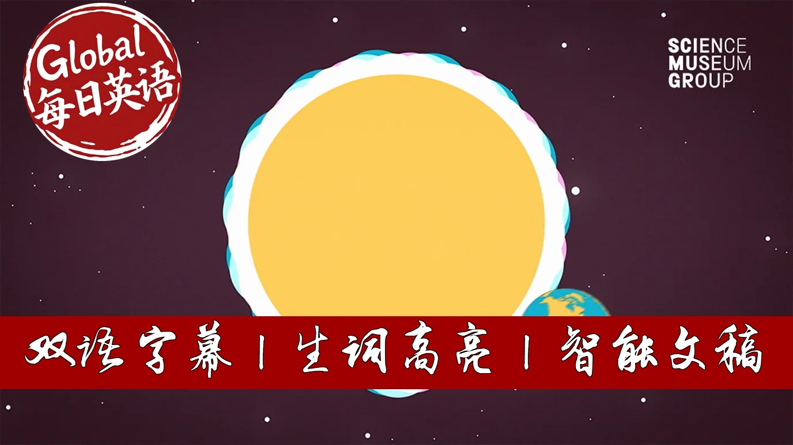

【【生词双高亮】BBC科普精选：太阳如何主宰地球命运】
Summary: The Sun, while an ordinary star in the vast galaxy, holds unparalleled significance for life on Earth. It not only enables life but deeply influences human biology, behavior, and modern technology. Our internal body clocks are synchronized by sunlight, and disruption to this rhythm can lead to serious health issues. The Sun also affects social behaviors like generosity and crime rates. Despite being a constant nuclear reactor, solar activities like storms pose potential risks to our technology-dependent civilization. Harnessing solar energy remains key to a sustainable future.
摘要： 太阳虽是银河系中一颗普通恒星，却是地球生命存在的基石。它不仅赋予生命能量，更深刻影响着人类生理节律、行为模式乃至社会活动。阳光调控着人体生物钟，一旦失调可能引发肥胖、心脏病等健康危机。研究显示日照程度会影响消费意愿与犯罪率。这颗持续核聚变的恒星既蕴藏着满足全球能源需求的潜力，其爆发的太阳风暴也可能对现代科技文明造成毁灭性打击。开发利用太阳能已成为可持续发展的重要方向。

⏱️ Estimated Reading Time: 7 min.
📚 四级生词 📚 六级生词 📚 雅思生词 📚 托福生词 📚 专八生词 📚 SAT生词 📚 考研生词 📚 GRE生词
The Sun is just one of hundreds of billions of stars in our galaxy.
In a way, there's nothing very special about it.
It's a fairly ordinary star, not particularly large or bright by stellar standards, but it's very special to us.
The Sun makes life on Earth possible.
Cultures across the world and throughout the ages worship the Sun.
In some ways, modern life has cut us off from the Sun.
In the developed world, we spend 90% of our time indoors.
And yet, the Sun is still a powerful force underpinning our lives.
The Sun affects our perception of beauty.
When people talk of the golden hour, that time just before the Sun sets, it's a real thing.
The Sun isn't actually yellow or orange or even red.
It's all the colours mixed together.
When the Sun rises or sets in the sky, the shortwave colours, green, blue and violet, are scattered, leaving only the yellow and the red part of the spectrum, giving that amazing glow.
When the Sun is high in the sky, its blue waves bounce around, which is why the sky looks blue.
And when you see a rainbow, that's the light from the Sun separated into all its magnificent colours.
Although we talk of the Sun rising in the East and setting in the West, that's not quite true.
It just seems that way to us.
The Sun stays in the same place.
It's the Earth that rotates on its axis.
This movement of the Sun is deeply embedded in our biology.
When sunlight enters the eye, it sends signals to a master clock in our brain called the Supra-Ciasmatic Nucleus.
This internal clock regulates everything, from when we sleep to how we digest a meal.
Messing with this finely tuned machine, when we work night shifts or fly across the world, can make us feel pretty rough.
Even the blueish light from a mobile phone late at night is enough to disrupt and confuse our internal body clock.
Being out of step with the Sun affects our mood and our ability to think clearly, and there's evidence that this kind of disruption can lead to higher rates of obesity, heart disease, diabetes and even cancer.
We're living out of step with the Sun, and some scientists say this could be causing a public health crisis.
When the Sun's shining, studies have shown that we tip more generously and are more likely to splash out on luxury goods.
And crime may go down too.
One study in the US found that when the clocks go forward for daylight savings time, the number of robberies, rapes and murders went down around 50%.
The Sun is a hell of a force to be reckoned with.
Every hour, enough sunlight falls on the earth to power the world for a year.
A year.
Deep in its core, at around 15 million degrees Celsius, the Sun is constantly fusing hydrogen together to make helium.
These nuclear reactions release vast amounts of energy in the form of sunlight.
If only we could work out how to harness this.
But we are getting there.
It's estimated that by 2022, 30% of our energy could come from renewables, with solar growing faster than anything else.
The Sun is vast, dynamic and sometimes violent.
Viewed up close, the Sun's surface looks like a raging sea of fire, with huge eruptions rising hundreds of thousands of kilometers into space.
There are even earthquakes on the Sun, called Sunquakes.
And what happens on the Sun can impact us.
The Sun sporadically blasts huge clouds of charged particles towards the Earth, potentially wreaking havoc on the technology that we all rely on.
But 97% of people have never heard of solar storms.
In 1859, a gigantic solar storm hit the Earth, creating auroras that covered the entire planet, knocking out the telegraph network and sending sparks flying from electrical equipment.
The solar storm of 1859 is still the largest on record.
But if a similar storm were to hit the Earth today, the consequences for our way of life could be devastating.
Knocking out electricity grids, satellite navigation and communications, for days, weeks or even months.
No wonder people used to worship the Sun.